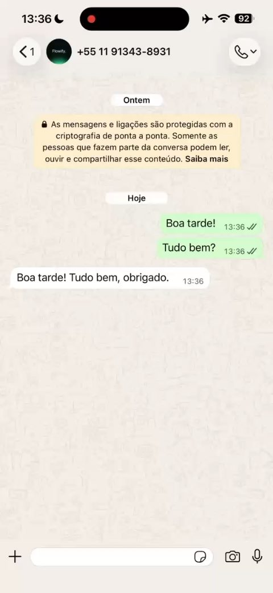

Vídeo · WhatsApp

Agente de IA · n8n
Secretária Virtual para Clínicas
Agente de IA que atende no WhatsApp, faz a pré-qualificação do lead, entende a necessidade e agenda o atendimento, com memória e buffer de mensagens.
Ver detalhes